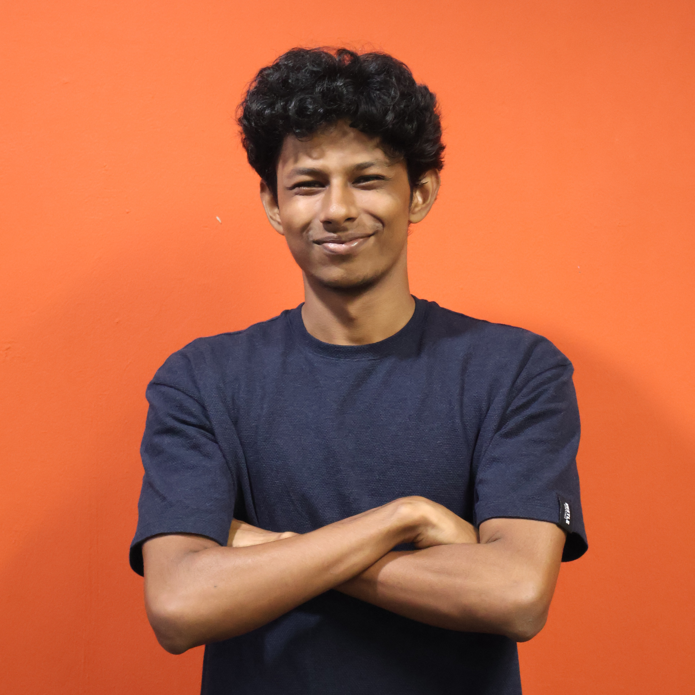
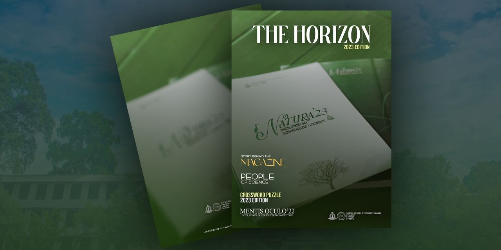
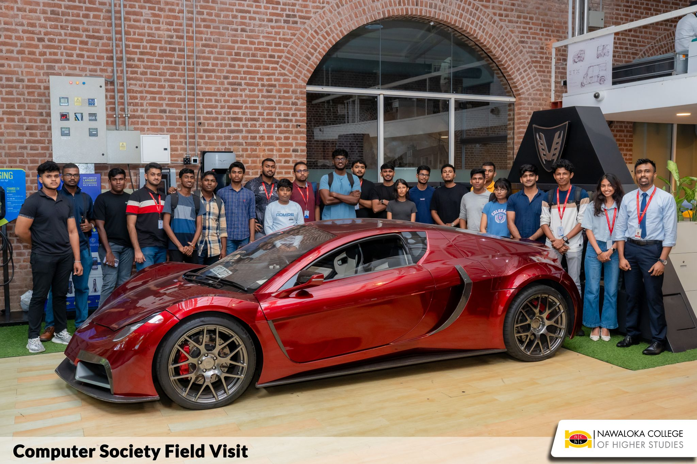

code · 0.96

Problem-Solving & Tutoring
Built resources and worked examples to help peers solve complex problems and debug code — achieving HD grades in programming fundamentals.
View on GitHub →A Computer Science student majoring in Artificial Intelligence — I train neural networks for computer vision, and I've spent five years as a graphic designer. This is where the two meet.

subject · dulein_c · 1.00I'm a Computer Science student majoring in Artificial Intelligence at Swinburne University of Technology, Sarawak. My focus is computer vision — training convolutional neural networks for image recognition and teaching machines to make sense of what they see.
Before the CNNs, there were five years of graphic design. That eye for composition, hierarchy, and detail is what I bring to everything I build — front-end to back-end. I like sitting exactly where creativity meets engineering.
Specialising in artificial intelligence and computer vision; training neural networks for image recognition.
Created marketing materials and visual content for a range of clients.
Completed the Swinburne University of Technology pathway diploma.
Completed O/L and A/L in the physical science stream.
Built resources and worked examples to help peers solve complex problems and debug code — achieving HD grades in programming fundamentals.
View on GitHub →
Designed and led the editorial team for the first-ever magazine of the Thurstan College Science Society — handling layout and visual content.
View design →
As President, organised multiple workshops — including a GitHub training session for students and a field trip to CodeGen International.
Learn more →I'm always open to new projects, creative ideas, or a spot on an amazing team. The detection box is open — reach out.